主大厅物件与 NPC
5 处建筑与固定摊位、46 个场景物件（含合并展示的 24 把同款座椅）、5 个对话 NPC（含 1 个规划新增）。现有条目配有 Studio 视口实拍和位置说明，点图可打开原图。策划YY图是替换方案的概念图。坐标为 Studio 的 X、Y、Z，单位为 studs。
大厅平面总览
半圆形避难所的新布局。后续表格里的 Studio 实拍记录原场景，策划 YY 图用于查看各项造型。
NPC 点位 · 布局草图，非比例
- 1诺兰·里德 · 休眠舱大厅出口
- 2配给员 · 配给窗口内
- 3出舱值班长 · 值班室入口
- 4留观外勤员 · 留观窗内
- 5红发行商老板娘 · 装备改装台旁
- 6–7食堂职员 · 休息厅柜台内的展示角色
大厅建筑与固定摊位
建筑名称采用当前 Studio 里的招牌或现场用途。后面的物件和 NPC 表格可从「所在建筑／区域」直接跳转到对应建筑。
| 建筑 | 所在区域 | 空间与关联物件 | Studio 视口实拍 | 策划备注 | 策划YY图 |
|---|---|---|---|---|---|
银行 · BANKWorkspace.Model · 以 BANK 立面辨认(-9.2, 128.3, 43.0) | 所在区域沿街建筑 · 面向广场 | 绿色木墙的沿街建筑，正门通过台阶连到广场。室内分为访客区和柜台里侧，摆有每日保险箱、四档钻石购买点、弹簧门和柜员。点赞宝箱放在门外平台。 | 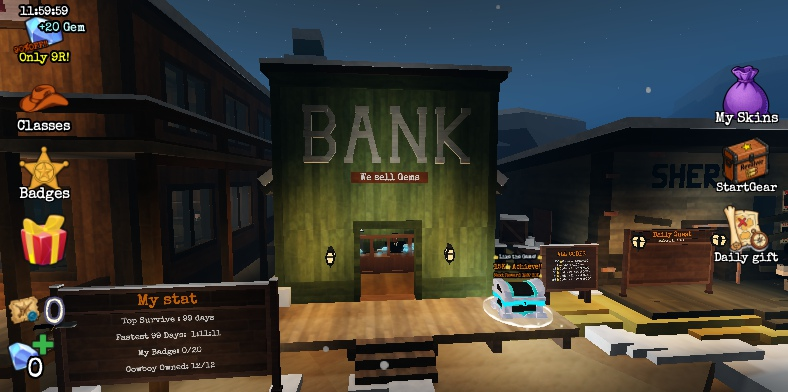 | 策划YY图 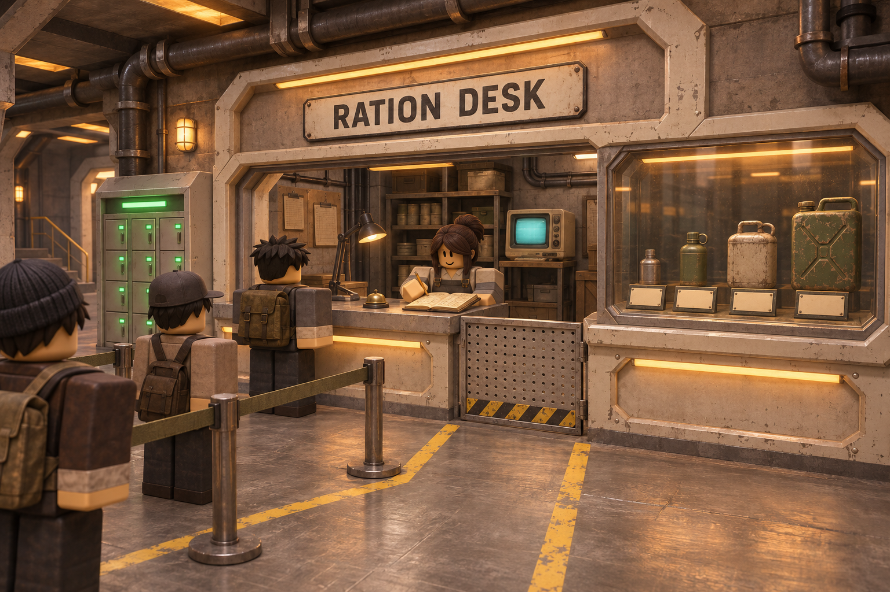 | |
警局与拘留室 · SHERIFFWorkspace.Scene.SHERIFF(-59.3, 123.2, 51.0) | 所在区域沿街建筑 · 面向广场 | 带门廊的警局建筑，后部有带铁栏的拘留室。警长站在门外，日常任务板也在门廊。沿室内往后走可以到 Boot 的拘留室。 | 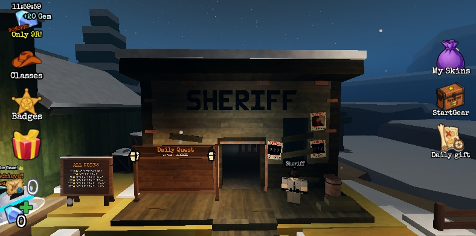 | 策划YY图 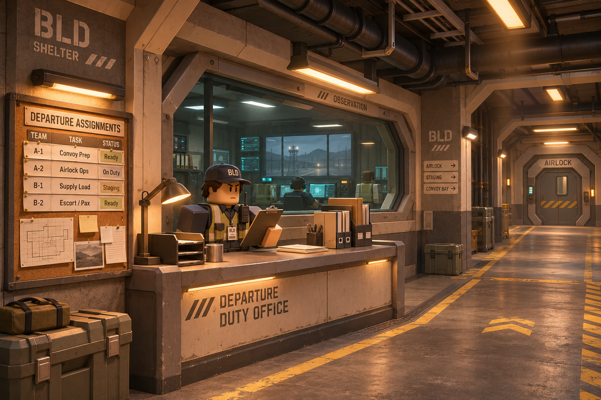 | |
酒馆 · SALOONWorkspace.Model · 以 SALOON 立面辨认(37.1, 137.4, 48.2) | 所在区域沿街建筑 · 双层 | 两层木结构建筑，正面有台阶、门廊和上层栏杆。两层各有 12 把可坐椅子。一层放置角色预览点，后方长柜台内有两个动画展示角色。 | 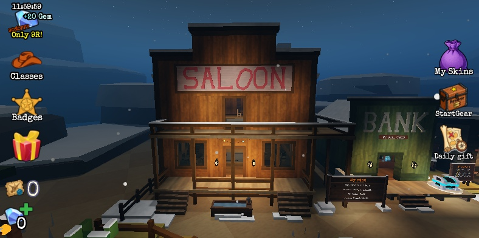 | 策划YY图 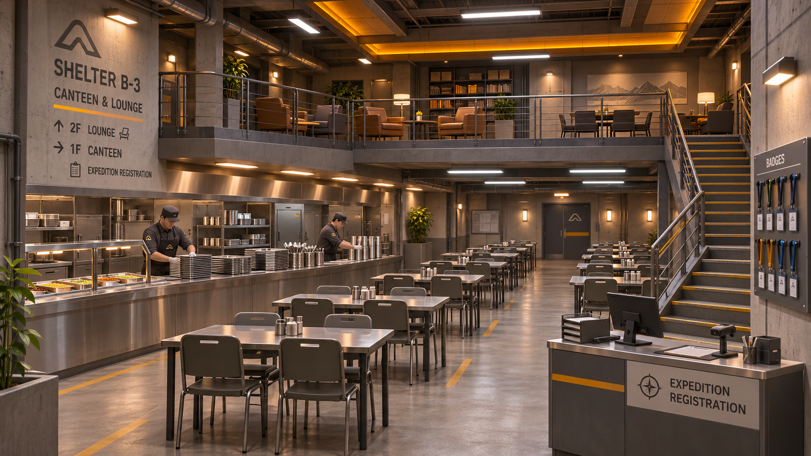 | |
待删除皮肤商店棚 · Skin ShopWorkspace.210 · 棚体(52.7, 126.0, -72.8) | 所在区域广场商店侧 · 开放式棚屋 | 带顶棚和背板的开放式建筑。皮肤展示台摆在棚内的木平台上，面向广场；右边紧邻露天永久升级摊。 | 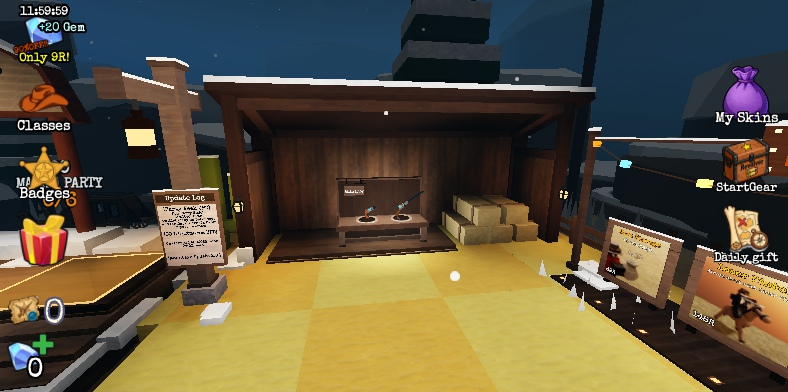 | 策划YY图 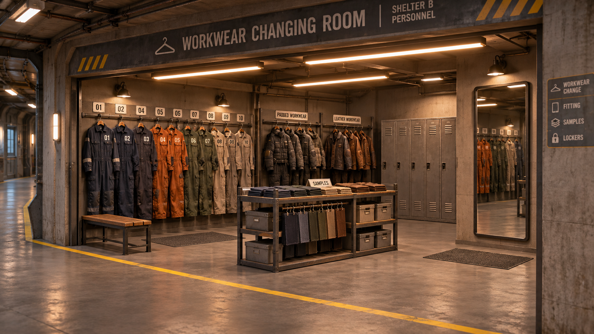 已弃用 · 原皮肤方案 | |
永久升级摊 · STOREWorkspace.MMM · 四个交互牌(73.4, 118.6, -36.1) | 所在区域广场商店侧 · 露天摊位 | 由 STORE 门架、灯串和低木平台组成。四块永久升级牌沿平台排开，玩家在广场侧逐一靠近购买。 | 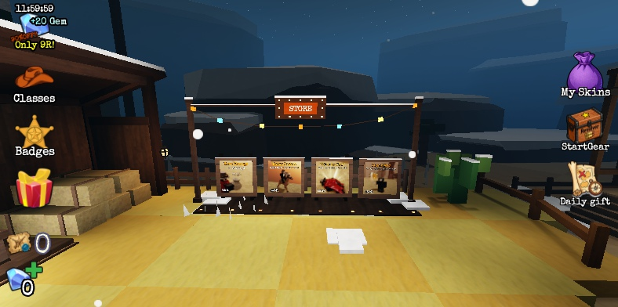 | 策划YY图 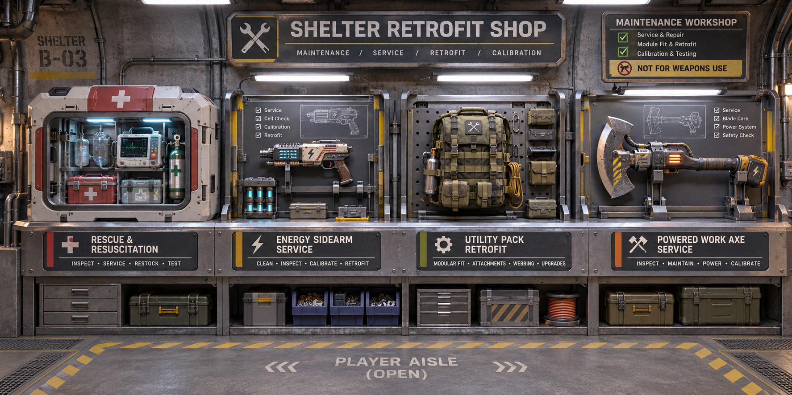 |
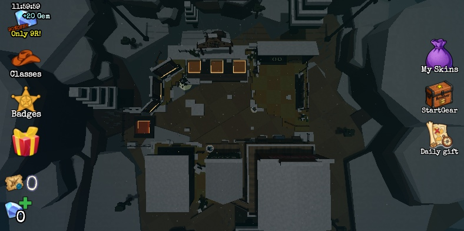
出生与匹配
| 物件 | 所在建筑／区域 | 用途与触发 | Studio 视口实拍 | 策划备注 | 策划YY图 |
|---|---|---|---|---|---|
出生与跌落复位Workspace.SpawnLocation(-16.9, 112.2, -7.4) | 所在建筑／区域广场公共区中央出生区域 | 加入大厅时在这个区域出生。角色高度比出生点低超过 100 studs 时，客户端将角色移回出生点。发生判定的是中心约 20×20 studs 的不可见区域。 | 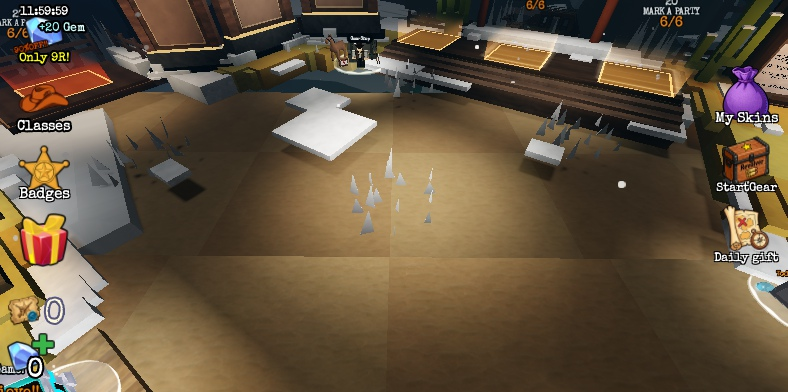 圆点标记出生区域中心 | 策划YY图 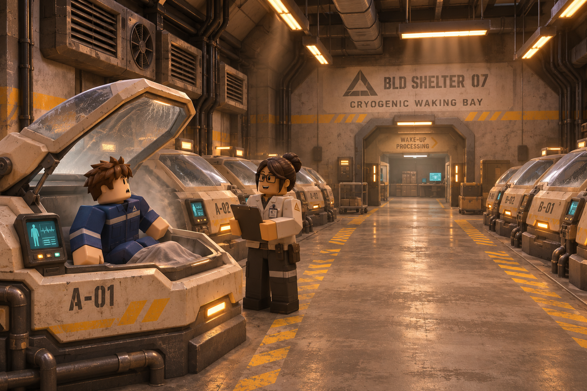 | |
常规组队台 1GroupPartyAreas.GroupPartyArea1.TouchPart(-40.4, 114.1, -62.6) | 所在建筑／区域广场公共区Black Water 镇牌前的组队木台 | 踩进发光方框。空台可发起队伍并选择模式和人数，等待中的队伍可加入。队长确认后通常倒计时 30 秒，满员后缩至 5 秒，开局把队员传送到荒野。 | 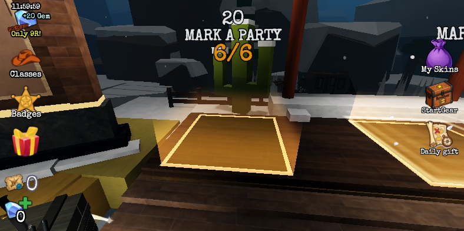 | 策划YY图 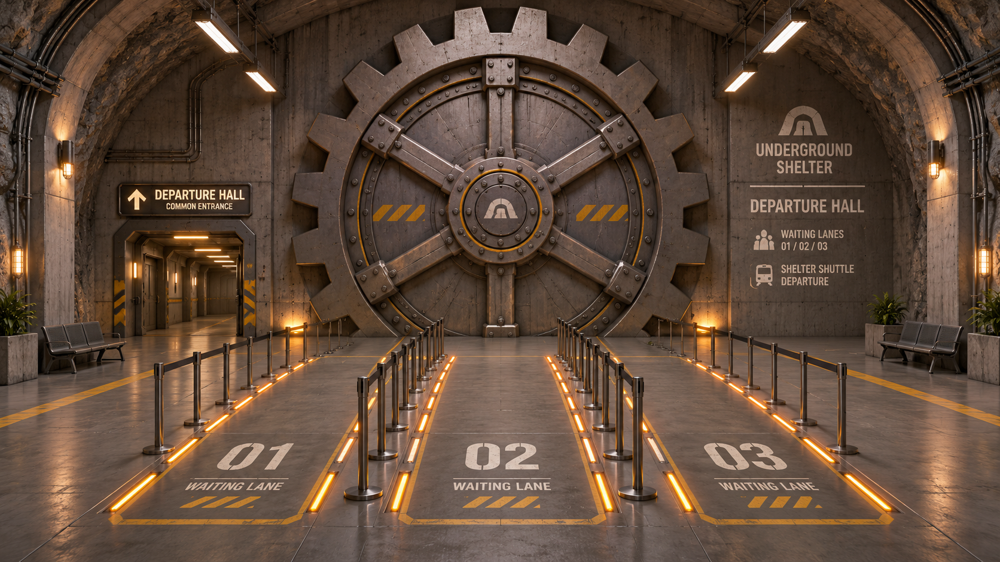 | |
常规组队台 2GroupPartyAreas.GroupPartyArea2.TouchPart(-16.2, 114.1, -62.6) | 所在建筑／区域广场公共区Black Water 镇牌前的组队木台 | 踩进发光方框。空台可发起队伍并选择模式和人数，等待中的队伍可加入。队长确认后通常倒计时 30 秒，满员后缩至 5 秒，开局把队员传送到荒野。 | 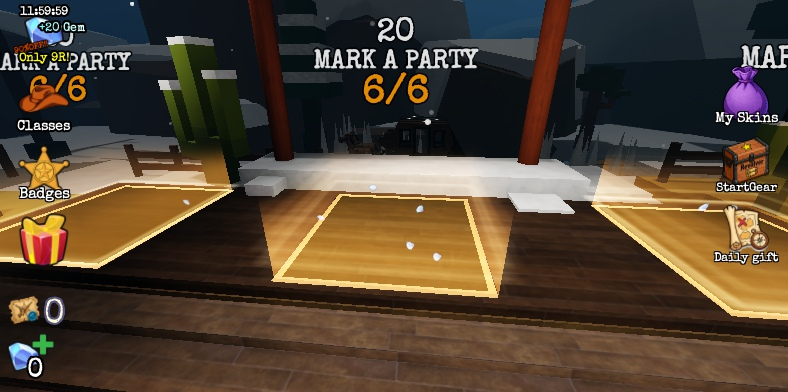 | 策划YY图 | |
常规组队台 3GroupPartyAreas.GroupPartyArea3.TouchPart(8, 114.1, -62.5) | 所在建筑／区域广场公共区Black Water 镇牌前的组队木台 | 踩进发光方框。空台可发起队伍并选择模式和人数，等待中的队伍可加入。队长确认后通常倒计时 30 秒，满员后缩至 5 秒，开局把队员传送到荒野。 | 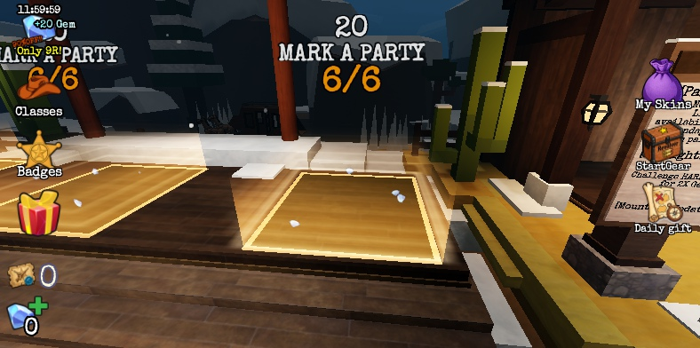 | 策划YY图 | |
每周轮换组队台模式轮换.模式轮换匹配区域(-95.1, 112.1, 2.5) | 所在建筑／区域广场公共区排行榜一侧的独立木台 | 开放时用同一套组队、倒计时和传送流程。脚本默认每周在 Bounty Hunter 与 Wild Boar Revenge 之间轮换，运营配置可覆盖。代码中的开放窗口为北京时间周五 19:30 至周一 12:00，休场时踩入会提示未开放。 | 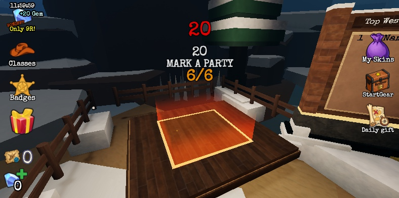 | 策划YY图 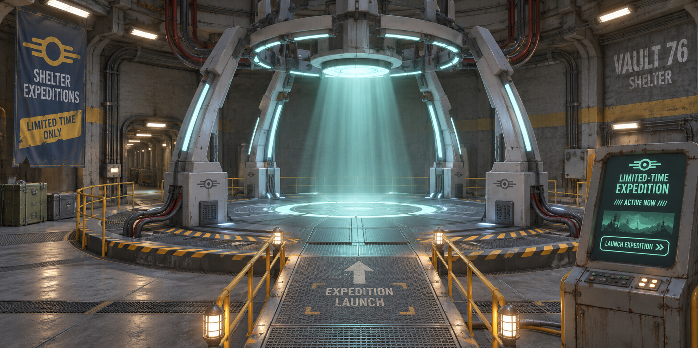 |
职业资料 · Classes
当前大厅开放 24 个职业。买断和租赁均以钻石计价，公开职业每次租赁 1 小时。能力按 1–3 级列出，外观栏只记录职业附加的帽饰、披风与护甲。游戏预览沿用玩家自己的 Roblox 头像。表中图片是在 Studio 用统一基础头像装配各职业预设后截取的，点击可查看原图。废土设定对应栏引用族群与阵营设定集。策划YY图展示可替换的帽型和头部附件。
| 职业 | 能力 | Studio 外观 | 购买价 | 租赁价 | 废土设定对应 | 头饰方案 | 策划YY图 |
|---|---|---|---|---|---|---|---|
| Musician | 能力 1 级 弹吉他为自己疗伤，间隔 15 秒 2 级 可治疗附近的人，间隔 10 秒 3 级 附近疗愈间隔缩到 5 秒 | Studio 外观 | 购买价6 | 租赁价2 | 废土设定对应流亡乐师02 废土流民吉他自疗与范围疗愈对应随营地迁徙的支援者 | 头饰方案黑色高顶礼帽、酒红补丁帽带、琴弦形铜别针 | 策划YY图 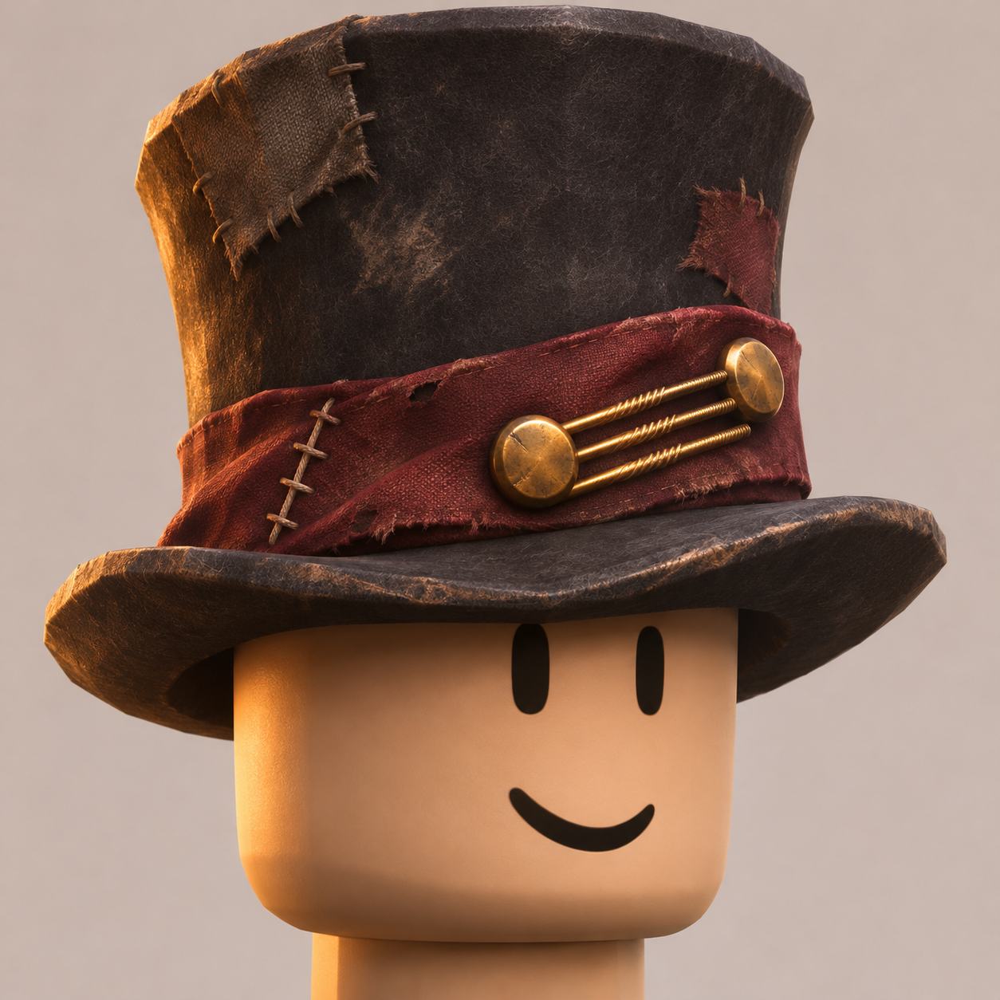 |
| Survivor | 能力 1 级 自带旧灯，饥饿消耗降低 10% 2 级 夜视改善 3 级 开局多带一份汤 | Studio 外观 | 购买价12 | 租赁价4 | 废土设定对应废墟幸存者01 废土拾荒者耐饥、夜视和开局旧灯适合长期独行的废墟居民 | 头饰方案深棕短檐帽、偏置小琥珀灯、浅布补丁 | 策划YY图 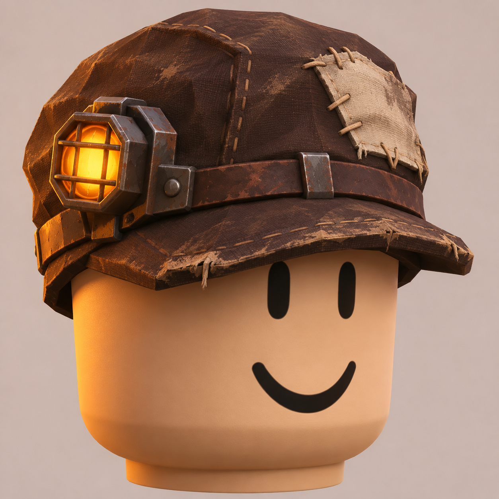 |
| Cooker | 能力 1 级 开局带烹饪锅 2 级 煮汤速度提高 20% 3 级 有 20% 概率煮出完美汤 | Studio 外观 | 购买价30 | 租赁价10 | 废土设定对应营地炊事员02 废土流民开局烹饪锅和煮汤加成对应为迁徙队伍负责热食的人 | 头饰方案奶白折褶厨师帽、油渍、搪瓷汤勺徽章 | 策划YY图 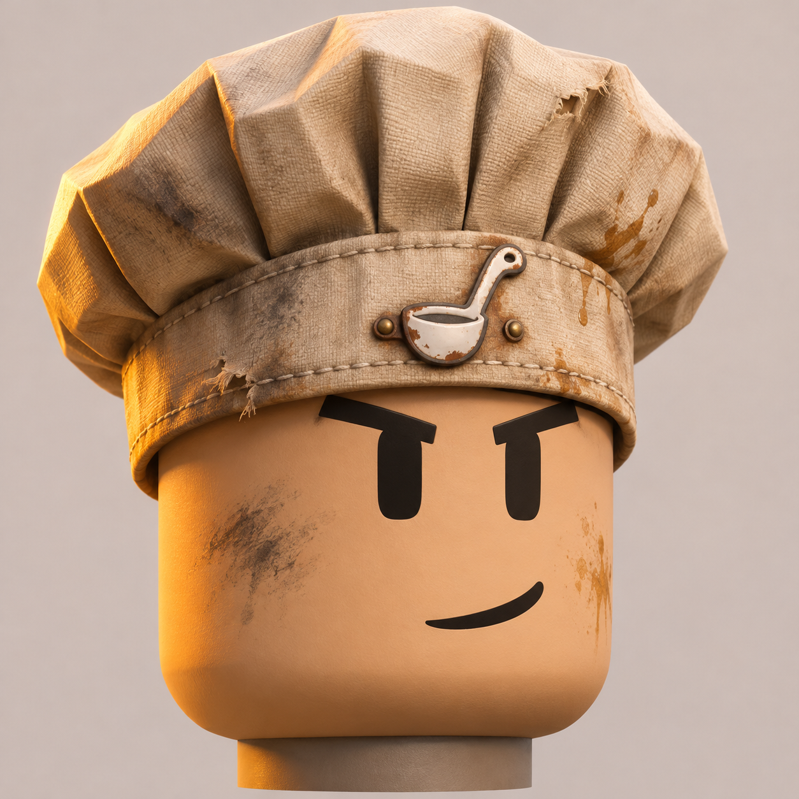 |
| Farmer | 能力 1 级 开局带一块农田 2 级 农田更容易长出大作物 3 级 农田有机会长出其他种类的产物 | Studio 外观 | 购买价50 | 租赁价10 | 废土设定对应棚室种植员25 驼峰王国商队与聚居地居民从荒漠聚居地取农业生活原型，农田技能对应在缺水环境下经营食物产出 | 头饰方案扁顶宽檐草帽、深绿帽带、搪瓷叶扣 | 策划YY图 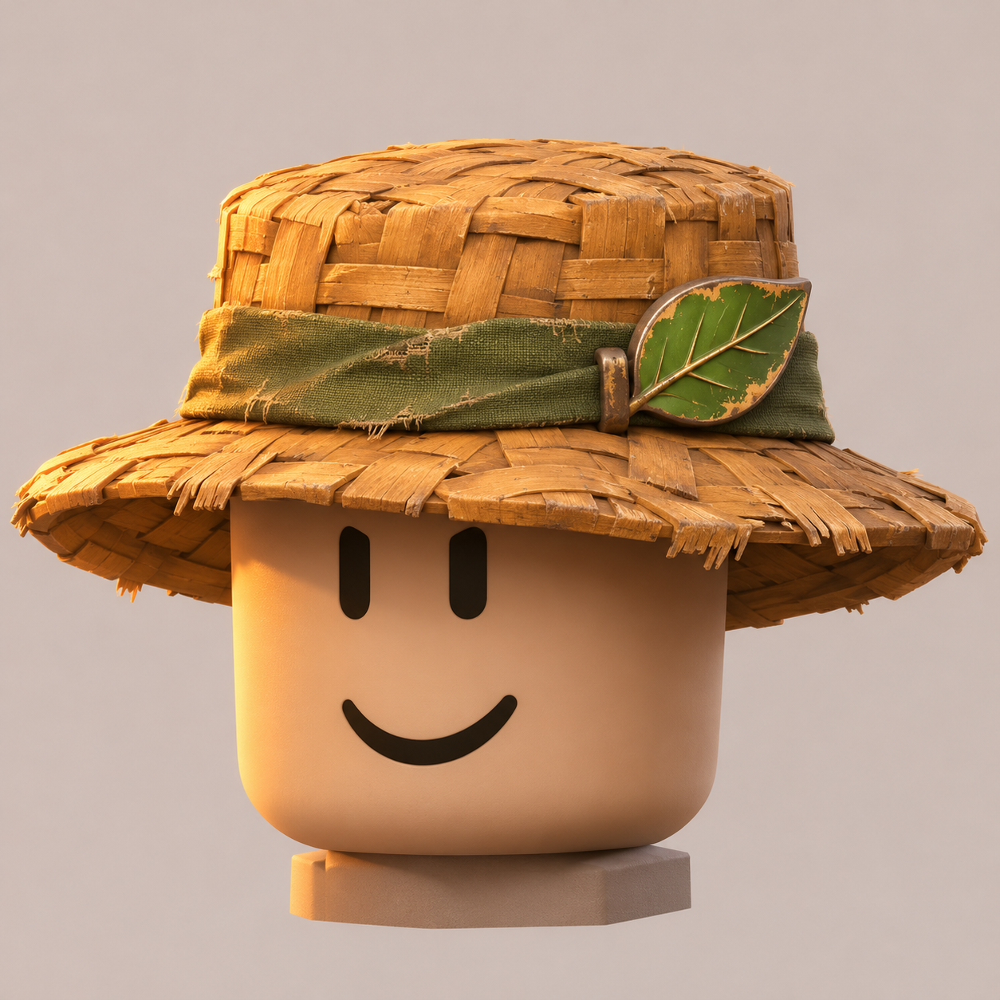 |
| Woodie | 能力 1 级 开局带好斧，砍树有 20% 概率多出 1 木料 2 级 已有种子掉落时，有 25% 概率使其翻倍 3 级 砍树有 20% 概率多出 1–2 木料 | Studio 外观 | 购买价70 | 租赁价20 | 废土设定对应林区伐木工01 废土拾荒者好斧、额外木料和种子构成伐木与补种循环 | 头饰方案深灰毛绒护耳帽、厚实下垂耳片、木纹扣 | 策划YY图 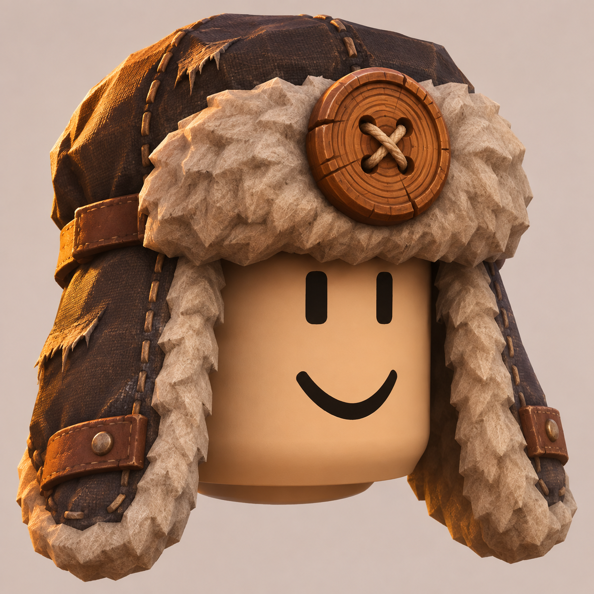 |
| Sheriff | 能力 1 级 开局带左轮和备用弹药 2 级 开火有 10% 概率免耗弹 3 级 提高开局备用弹药 | Studio 外观 | 购买价80 | 租赁价20 | 废土设定对应聚居地治安官16 巨石城警卫／执法者起始左轮与备用弹贴合小型聚居地执法者 | 头饰方案棕色卷檐牛仔帽、正面大铜星徽 | 策划YY图 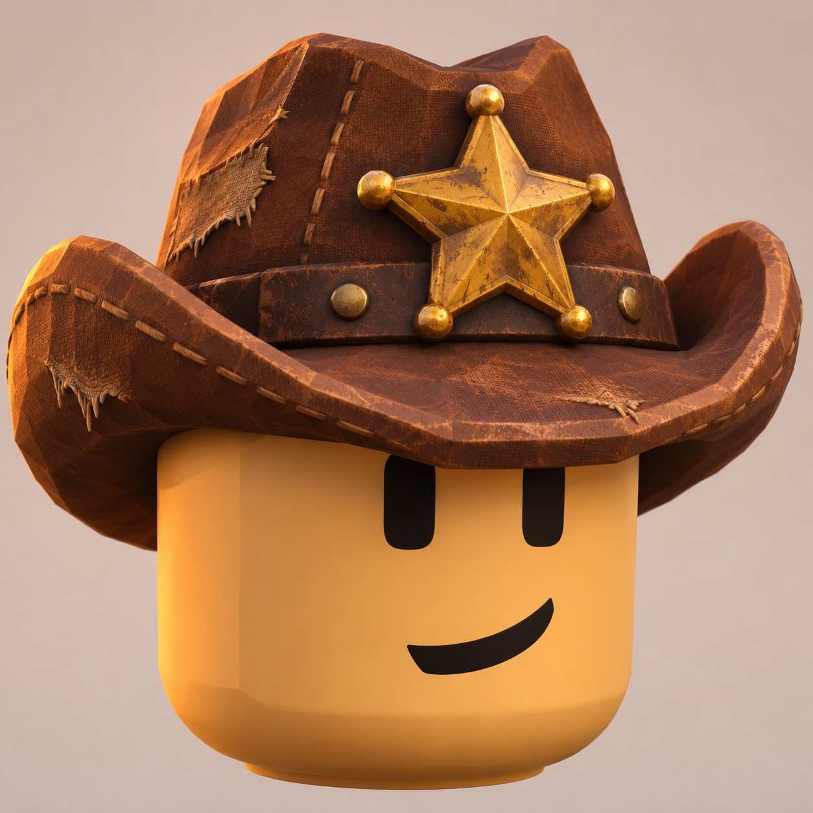 |
| West Settler | 能力 1 级 开局有马，提高骑乘速度与跳跃 2 级 坐骑姿态增加 10 个袋位，起身后取消 3 级 进一步提高马的跳跃，降低骑乘耐力消耗 | Studio 外观 | 购买价400 | 租赁价20 | 废土设定对应商路骑手25 驼峰王国商队骑兵坐骑与骑乘时的额外袋位对应商队的长途运输 | 头饰方案超宽深棕骑帽、编织帽绳、赭黄风沙面巾 | 策划YY图 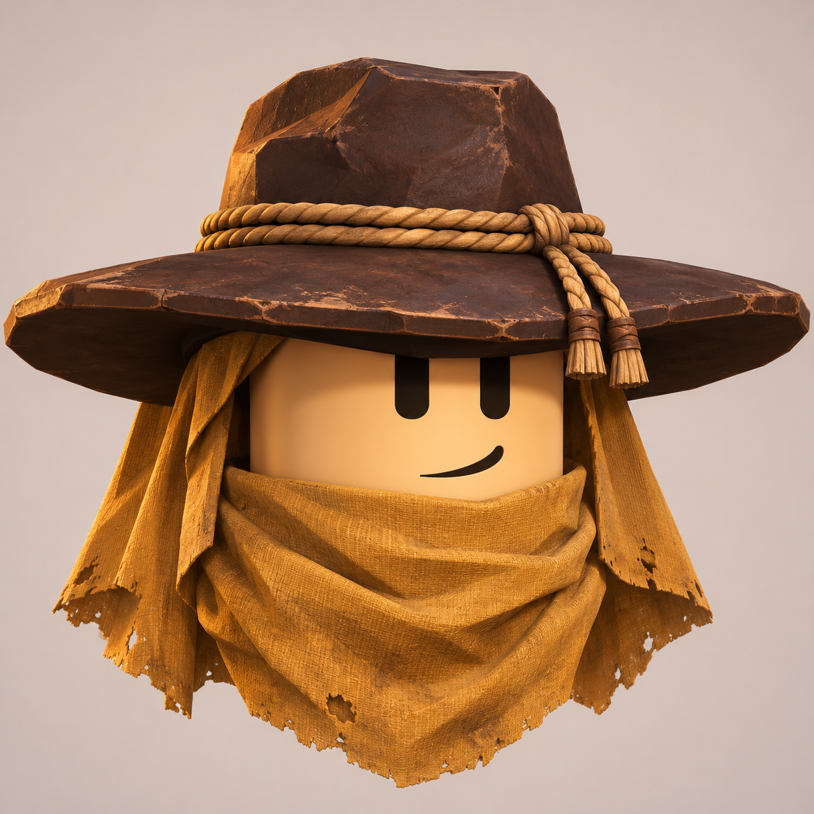 |
| Light Saber Master | 能力 1 级 开局带光剑，可格挡／反射子弹，持剑移速提高 15% 2 级 持剑时最大生命提高 15% 3 级 持剑时光剑伤害提高 50% | Studio 外观 | 购买价600 | 租赁价30 | 废土设定对应热刃近卫23 圣光骑士团从原型取重甲和高能刃的视觉，突出持剑、格挡与进攻切换 | 头饰方案象牙白陶瓷斗笠、窄金边、两条侧挂布饰 | 策划YY图 |
| Ronnie | 能力 1 级 举哑铃累积肌肉，持铃时肌肉停止自然衰减 2 级 肌肉值超过 75 时有机会瞬间砍倒树或击倒动物 3 级 肌肉上限提至 150，中等肌肉值时移速提高 10% | Studio 外观 | 购买价800 | 租赁价30 | 废土设定对应废料场力士17 外城工匠与劳工通过举哑铃强化自己，适合以搬运和拆解废料为生的普通人 | 头饰方案黑铁半盔、前额厚皮垫、配重形侧板 | 策划YY图 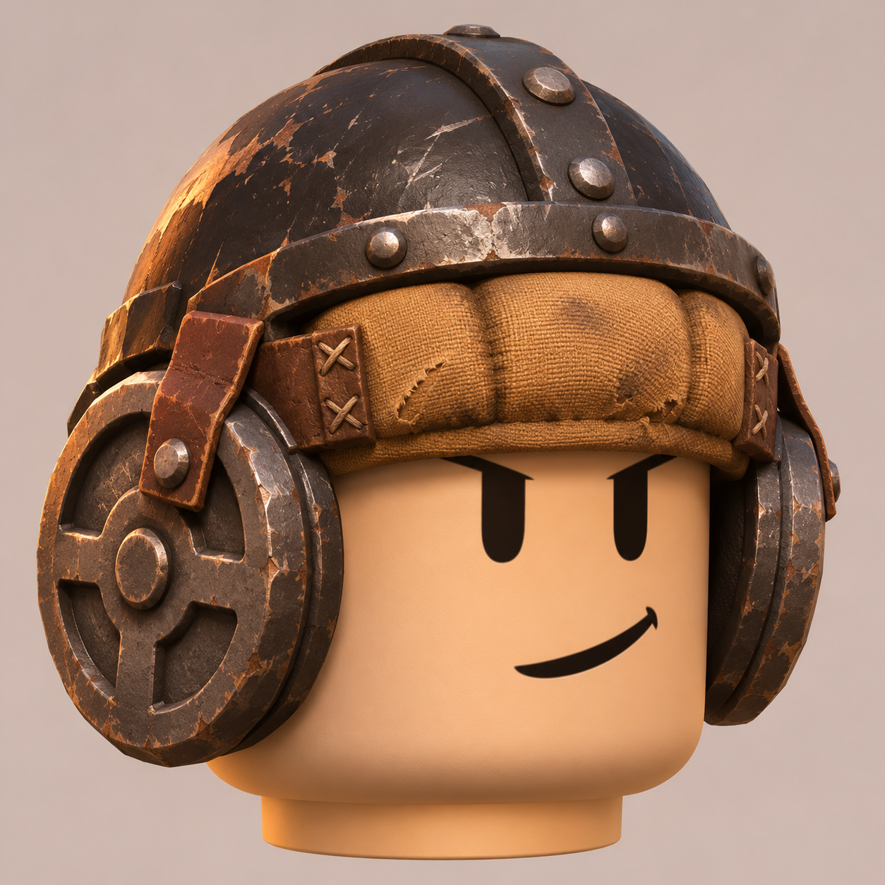 |
| Vampire | 能力 1 级 白天最大生命降低，夜间强化，仅能吃生肉。命中有 20% 概率回复 20 生命 2 级 吸血概率提高到 30% 3 级 吸血概率提高到 50% | Studio 外观 | 购买价400 | 租赁价30 | 废土设定对应夜行尸鬼36 清醒尸鬼白天弱、夜间强、命中回补生命，加上饮食限制，适合一个特殊的夜行个体 | 头饰方案深色尖兜帽、焦橙护额、开口露出尸鬼轮廓 | 策划YY图 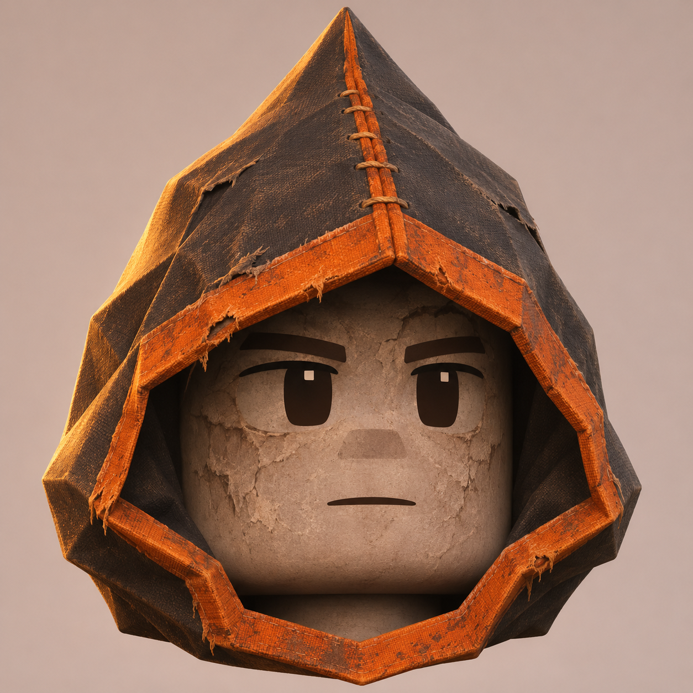 |
| Doctor | 能力 1 级 开局带 2 条绷带，医疗物品治疗量提高 50% 2 级 开局带急救包，治疗速度提高 50% 3 级 可消耗自身生命救起队友，冷却约 5 分钟 | Studio 外观 | 购买价60 | 租赁价15 | 废土设定对应外勤医务员20 学院研究员绷带、急救、治疗强化和复活对应有临床背景的外勤人员 | 头饰方案象牙白折边医务帽、圆形前额反光镜、暗红织标 | 策划YY图 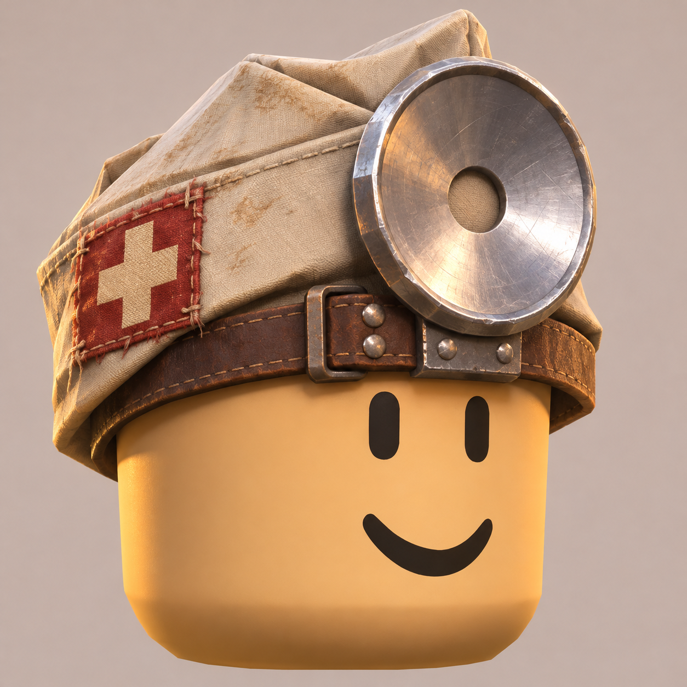 |
| Poison Master | 能力 1 级 开局带毒弓和面罩，毒伤提高 15% 2 级 毒伤提高至 30%，弓装填加快 25% 3 级 毒伤提高至 45%，每次射击有 20% 概率触发双箭 | Studio 外观 | 购买价250 | 租赁价20 | 废土设定对应荒林毒箭师10 变种人萨满／巫医取草药辨识与氏族装束作原型，游戏分工为带毒伤的弓手 | 头饰方案黑白羽冠、青金与黄铜额带、短面巾 | 策划YY图 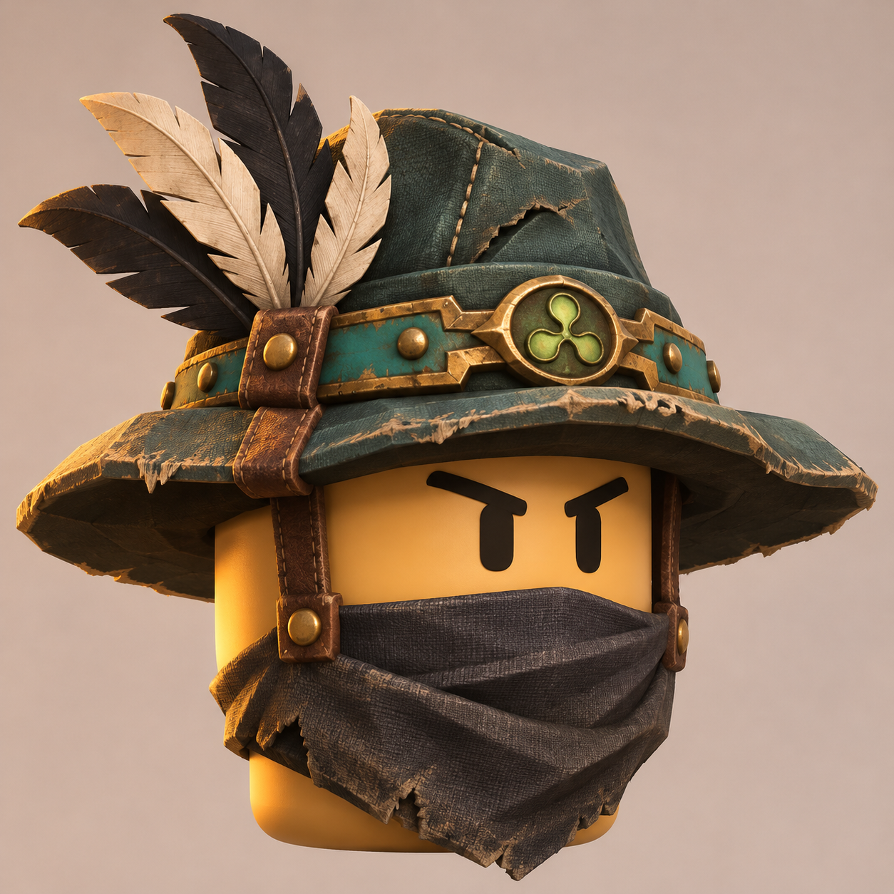 |
| Gatling Master | 能力 1 级 开局带加特林，持枪时移速不降低 2 级 有 10% 概率免耗弹 3 级 开局多 100 发弹药，命中有 10% 概率触发燃烧 | Studio 外观 | 购买价600 | 租赁价30 | 废土设定对应重火力手12 军团基层士兵机动持重武器、弹药节省和持续输出贴合成体系的重火力岗位 | 头饰方案墨绿硬质宽檐帽、成对厚耳罩、宽帽箍 | 策划YY图 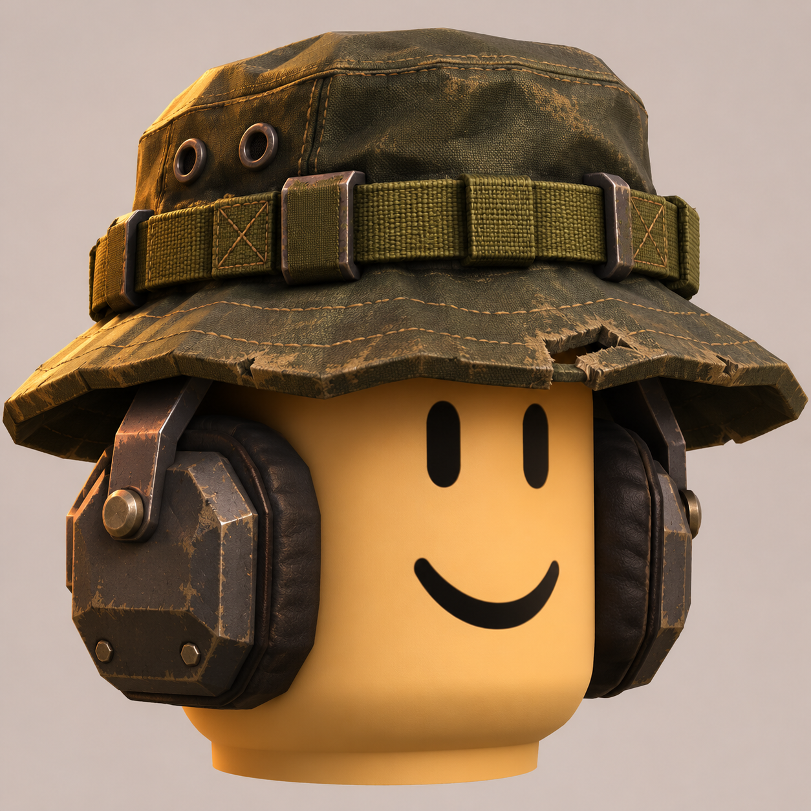 |
| Worker | 能力 1 级 开局带锤，尝试把共享工作台升 1 级 2 级 有机会免材料制作建筑或设施 3 级 职业说明增加造弹免料；局内判断实际读取二级标签 | Studio 外观 | 购买价200 | 租赁价20 | 废土设定对应工坊技师17 外城工匠与劳工开局提升共享工作台、免料制作对应在工坊负责生产的人 | 头饰方案油污灰短帽、上翻双蓝镜片、黄铜卡扣 | 策划YY图 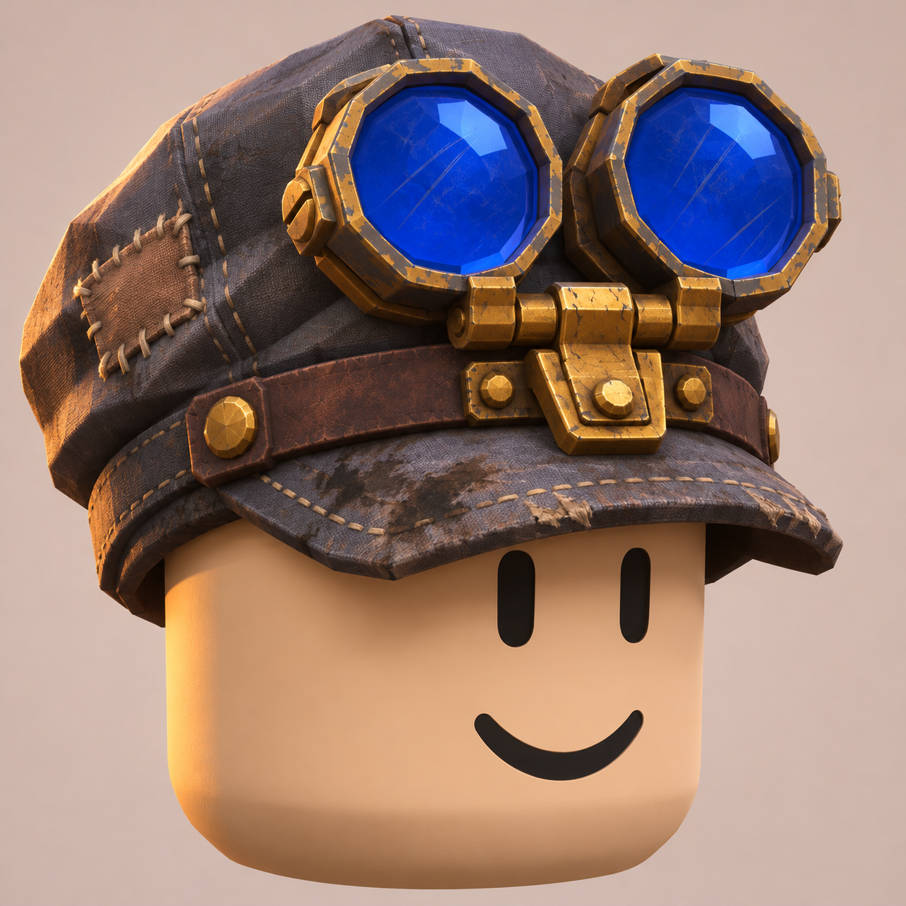 |
| No Name | 能力 1 级 开局带 Peacekeeper。命中蓄能，蓄满后可锁定附近目标的头部 2 级 扩大技能瞄准范围 3 级 提高技能伤害和蓄能速度 | Studio 外观 | 购买价600 | 租赁价30 | 废土设定对应无名游枪手36 清醒尸鬼旧枪、连击蓄能与精确射击适合有地表生涯的独行老枪手 | 头饰方案旧黑色高冠宽檐帽、哑铜节段帽带、暗红遮脸巾 | 策划YY图 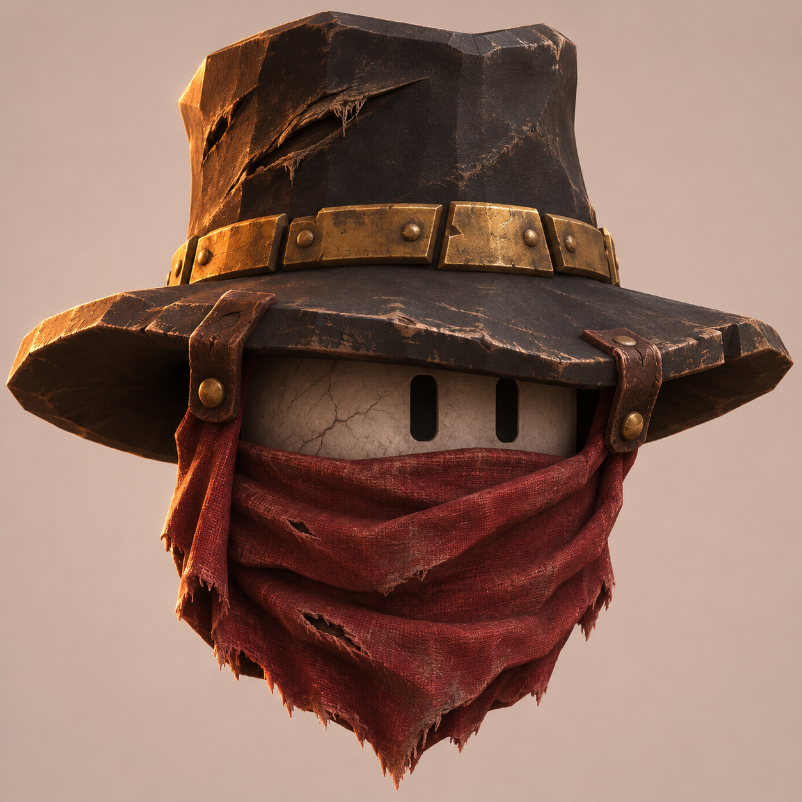 |
| Thor | 能力 1 级 开局带雷神锤和护甲。命中蓄雷，蓄满后下一击引发落雷 2 级 扩大落雷伤害范围 3 级 提高落雷伤害和每次命中的蓄能 | Studio 外观 | 购买价1000 | 租赁价50 | 废土设定对应电弧重装兵28 战前人联轨道空降兵将原型的动力装甲套在蓄能落雷的重装打法上，视觉主体是护甲与电弧 | 头饰方案黑金全盔、双翼形耳甲、冷蓝发光条 | 策划YY图 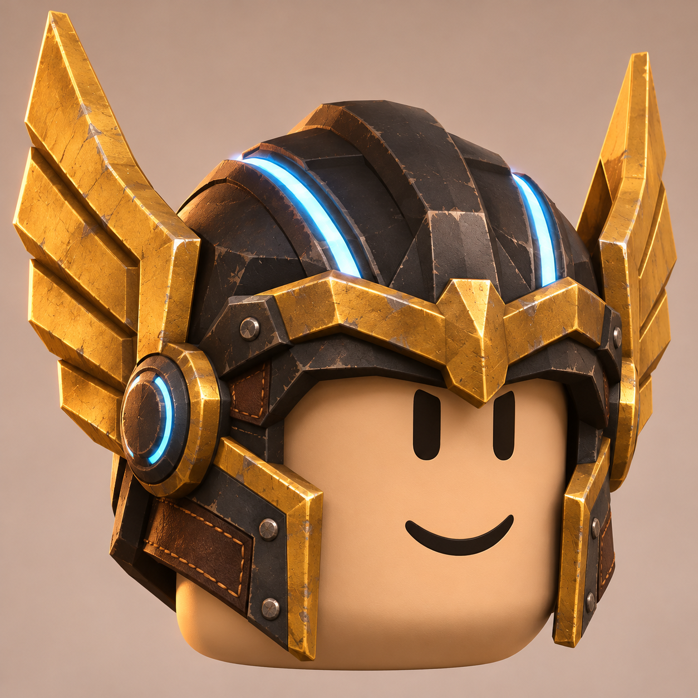 |
| Traveller | 能力 1 级 开局带靴子和梯子，提高走路、攀爬和跳跃能力 2 级 开箱加快 25%，夜视改善 3 级 背包容量增加 3 格 | Studio 外观 | 购买价50 | 租赁价10 | 废土设定对应遗迹勘探员21 学院勘探员／调查员开局梯子、攀爬、夜视和开箱加成直接对应遗迹外勤 | 头饰方案浅灰宽檐远行帽、短灰护颈兜布、黑色测绘镜片 | 策划YY图 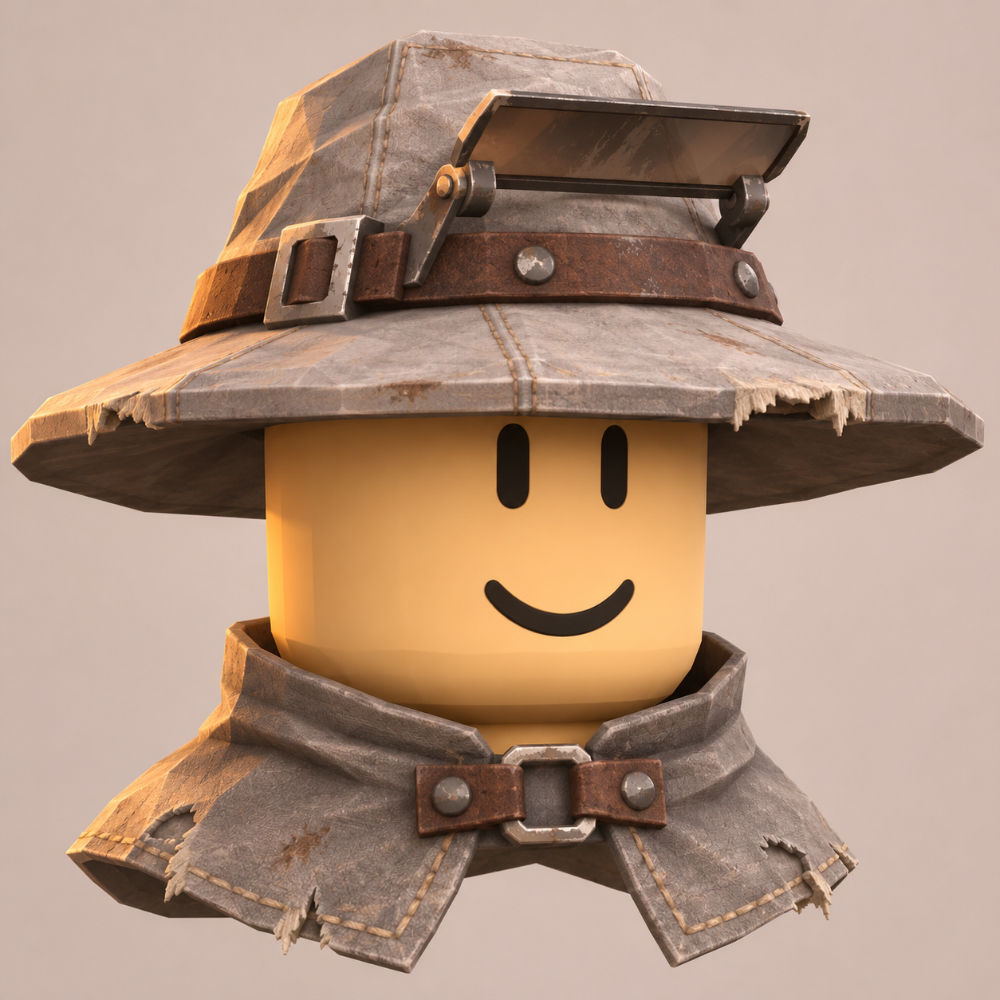 |
| Beast Master | 能力 1 级 召唤兽伙伴并喂肉强化 2 级 喂废铁切换金属形态，击倒目标有机会掉废铁 3 级 喂尸体切换僵尸形态，攻击有机会吸血 | Studio 外观 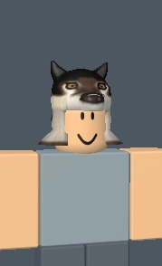 尖耳兽头兜帽，深色口鼻与琥珀色眼睛 | 购买价600 | 租赁价30 | 废土设定对应变异兽驯养员10 变种人萨满／巫医召唤兽伙伴与喂养切换形态对应熟悉变异兽习性的饲养者 | 头饰方案粗皮尖耳兜帽、不对称尖耳、两枚驯养牌 | 策划YY图 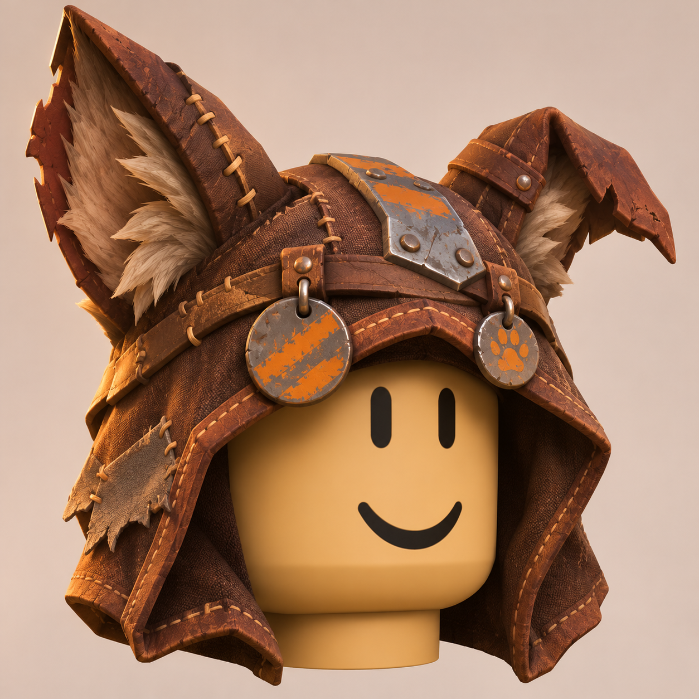 |
| Hunter | 能力 1 级 开局 3 个陷阱，陷阱伤害提高 10% 2 级 捕猎有机会多得肉，陷阱冷却缩短 1 秒 3 级 更易取得兽皮、脂肪，陷阱定身延长 1 秒 | Studio 外观 | 购买价150 | 租赁价20 | 废土设定对应荒原猎手03 废土猎人／荒野猎户陷阱、额外肉与兽皮产出与原型分工直接吻合 | 头饰方案土黄护耳猎帽、短硬帽檐、扁平猎夹扣 | 策划YY图 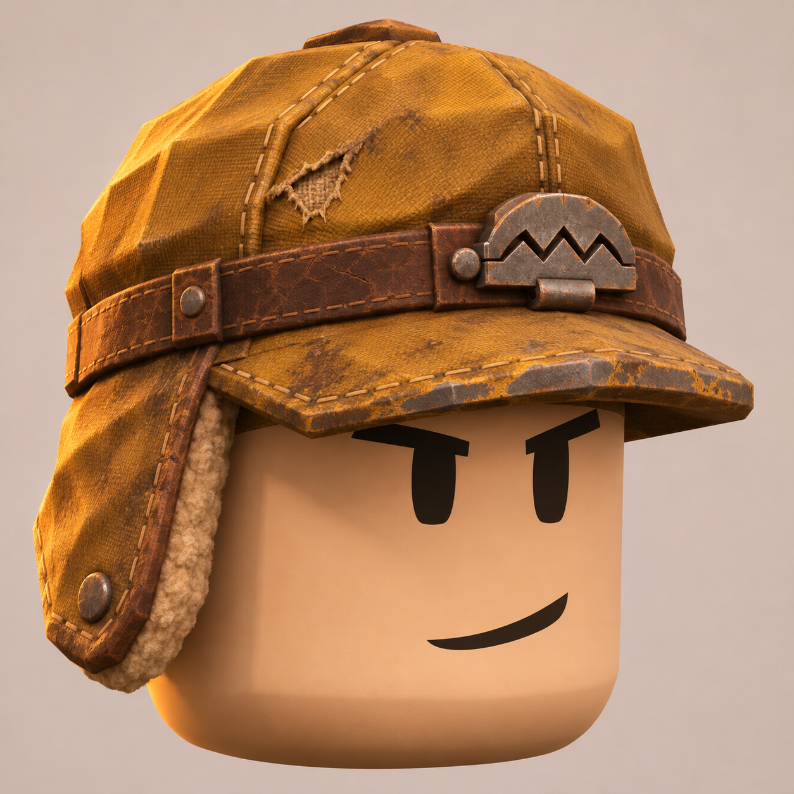 |
| Military Cowboy | 能力 1 级 开局有 2 座自动弩塔，自建防御设施生命提高 2 级 开局加 5 铁，防御设施攻击间隔缩短 20% 3 级 三级技能配置为开局加 10 铁，同时提高防御设施伤害 | Studio 外观 | 购买价600 | 租赁价40 | 废土设定对应防御工程兵19 企业开拓兵团步兵／陆战队开局自带防御设施并强化其属性，职责是据点布防 | 头饰方案橄榄绿斜贝雷帽、钢质齿轮徽、加厚皮帽沿 | 策划YY图 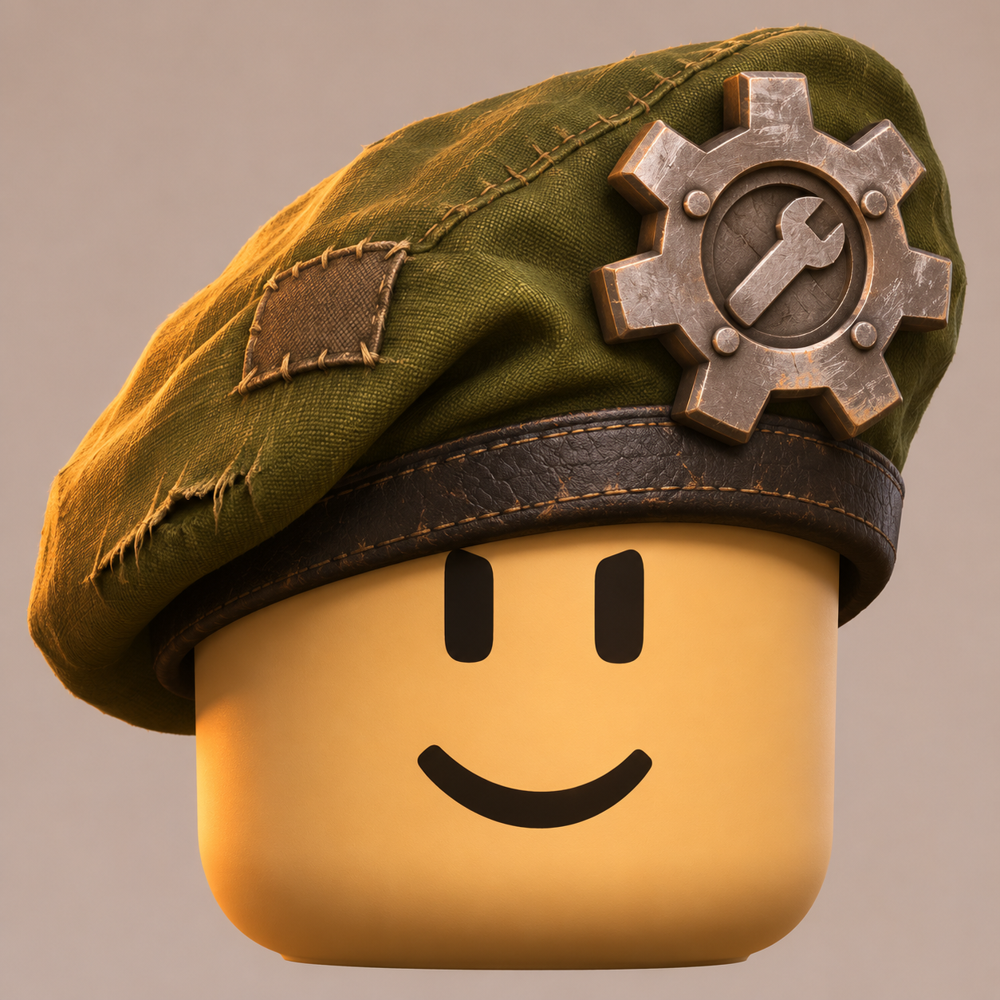 |
| Priest | 能力 1 级 开局带圣水，可伤害幽灵僵尸，也能治疗队友 2 级 扩大圣水范围，冷却缩短 2 秒 3 级 增加 3 点圣水容量，并提高伤害 | Studio 外观 | 购买价400 | 租赁价40 | 废土设定对应守灯祭司23 圣光骑士团圣水对幽灵类敌人生效、同时能治疗队友，适合兼营救护与守夜的职务 | 头饰方案白金高冠祭帽、灯焰徽、短垂带 | 策划YY图 |
| Molotov Cowboy | 能力 1 级 开局有可补充的投掷瓶，容量 5，每 5 秒补 1 个 2 级 提升燃烧伤害，每 3 秒补 1 个 3 级 容量增加 5，提高爆炸伤害 | Studio 外观 | 购买价500 | 租赁价50 | 废土设定对应火罐投手05 通用掠夺者借拼接护具与粗制装备的轮廓，对应游戏中的可补充投掷瓶。可设为改行加入外勤队的人 | 头饰方案高冠炭灰毡帽、焦褐帽边、大方铜扣 | 策划YY图 |
| Ironblood | 能力 1 级 只能吃肉，生命提高 20%，近战伤害提高 35% 2 级 满血时移速提高 10% 3 级 饱食度高于 85% 时缓慢回血 | Studio 外观 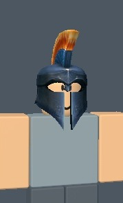 深蓝包脸头盔，顶部有橙色盔羽 | 购买价400 | 租赁价40 | 废土设定对应铁血变种卫士08 绿皮变种人仅吃肉、强化生命和近战，贴合体格强壮的变种近战位。建议保留其交流能力 | 头饰方案深蓝重盔、大橙盔羽、下颌露出橄榄绿皮肤 | 策划YY图 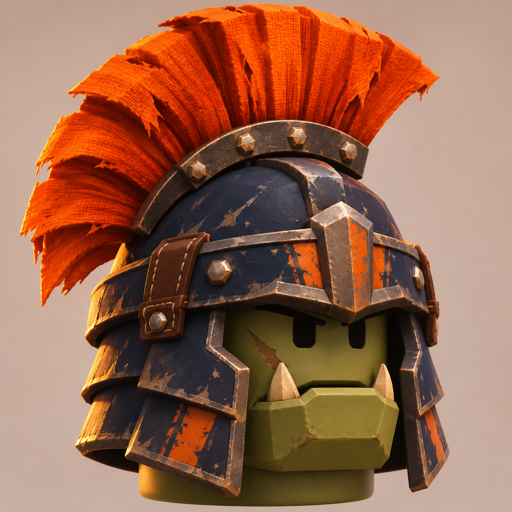 |
| Miner | 能力 1 级 开局有旧镐，夜视改善。挖矿有 20% 概率追加一抽 2 级 追加产出变为 25% 概率抽两次 3 级 开局旧镐换成银镐 | Studio 外观 | 购买价300 | 租赁价30 | 废土设定对应矿井勘采员17 外城工匠与劳工夜视、采矿额外产出与银镐自然对应废弃矿井的专业工人 | 头饰方案白色矿工安全帽、正中大圆黄头灯、煤灰刮痕 | 策划YY图 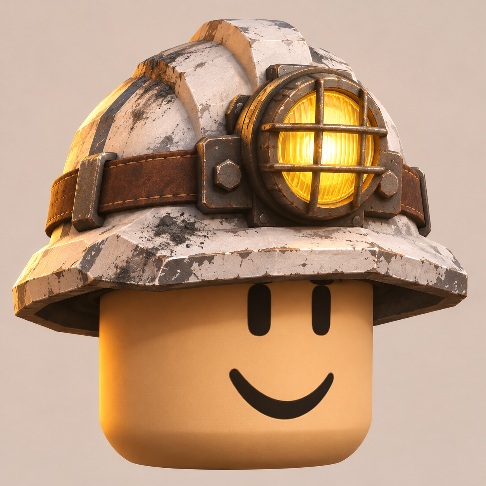 |
隐藏配置 · Nobody 与 Admin
以下条目未向新玩家公开展示，价格列记录配置数据。
| 职业 | 能力 | Studio 外观 | 购买价 | 租赁价 | 废土设定对应 | 头饰方案 | 策划YY图 |
|---|---|---|---|---|---|---|---|
| Nobody | 能力 1 级 空手开局，取消各类开局携带道具，并有生存和战斗方面的负面修正 2 级 负面修正持续 3 级 负面修正持续 | Studio 外观 | 购买价300 | 租赁价30 | 废土设定对应无名流民02 废土流民／难民空手开局的隐藏挑战项。 | 头饰方案沿用磨旧的深棕宽檐帽。 | 策划YY图— |
| Admin | 能力 技能栏为管理用途的 Admin 标签 | Studio 外观 | 购买价9999（配置值） | 租赁价9999（租期 0 秒） | 废土设定对应管理配置 | 头饰方案透明帽饰占位。 | 策划YY图— |
商店与奖励
四个钻石购买点外观接近，由每张图的中心和左列坐标定位。
| 物件 | 所在建筑／区域 | 用途与触发 | Studio 视口实拍 | 策划备注 | 策划YY图 |
|---|---|---|---|---|---|
每日钻石保险箱Workspace.Model.Model.RightDoor(-1.3, 117.2, 49.1) | 所在建筑／区域室内银行柜台里侧的保险箱 | 银行柜台里的保险箱。靠近交互后由服务端校验领取时间，成功领取 1 钻石并播放开门动画。领取后按上次领取时间计 24 小时冷却。 | 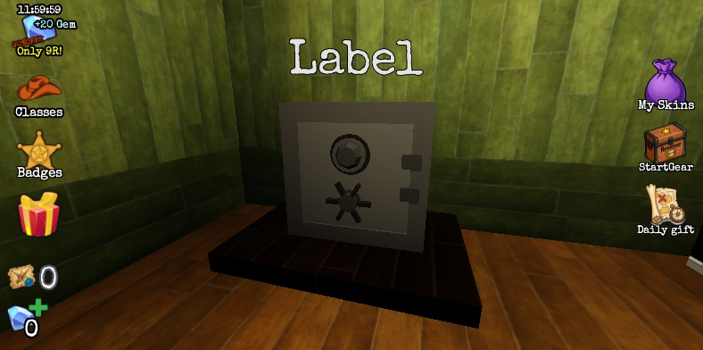 | 策划YY图 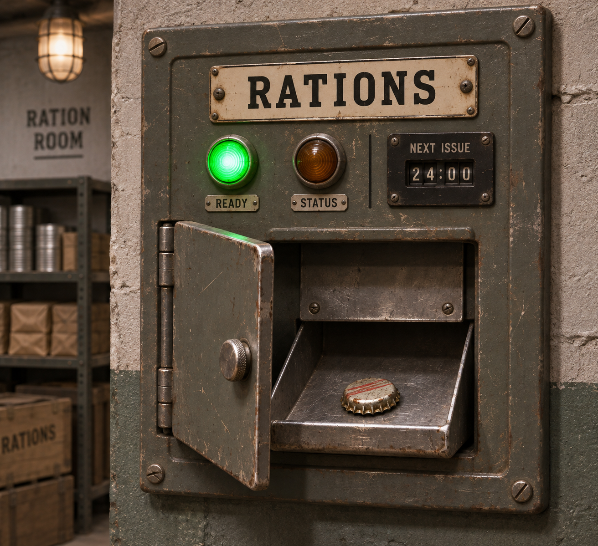 | |
20 钻石购买点Workspace.Model.223.Gem1(-3, 117.4, 41.9) | 所在建筑／区域室内银行柜台的钻石展示格 | 柜台蓝色钻石对应的近距交互。触发后弹出 20 钻石的 Roblox 商品购买确认。 | 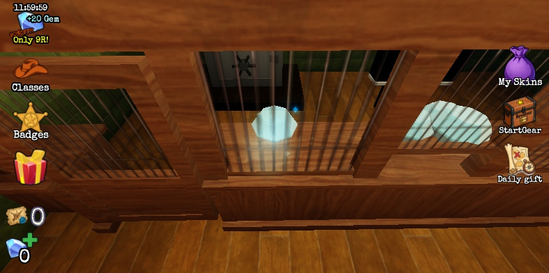 | 策划YY图 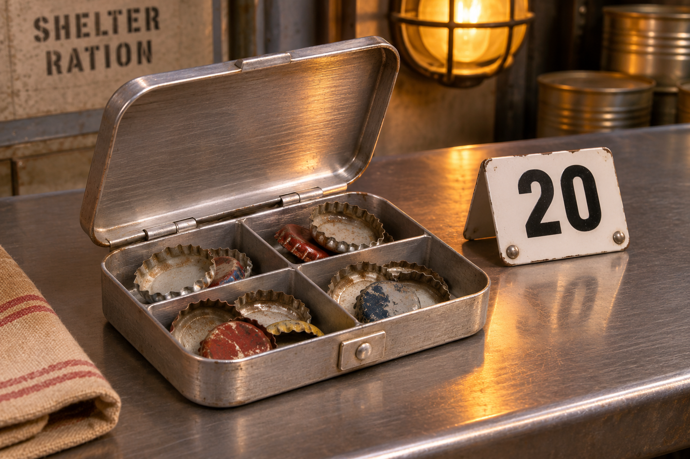 | |
99 钻石购买点Workspace.Model.223.Gem2(-7.2, 117.4, 42) | 所在建筑／区域室内银行柜台的钻石展示格 | 柜台蓝色钻石对应的近距交互。触发后弹出 99 钻石的 Roblox 商品购买确认。 | 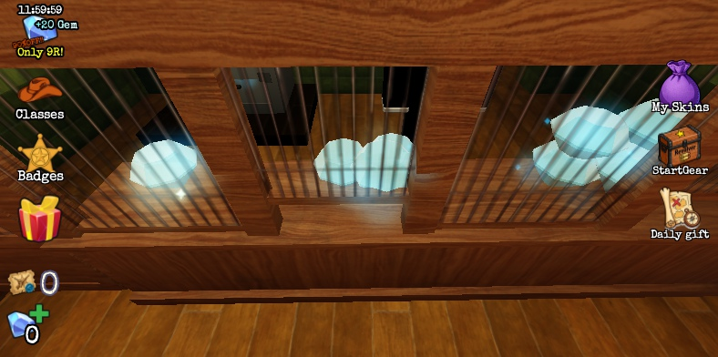 | 策划YY图 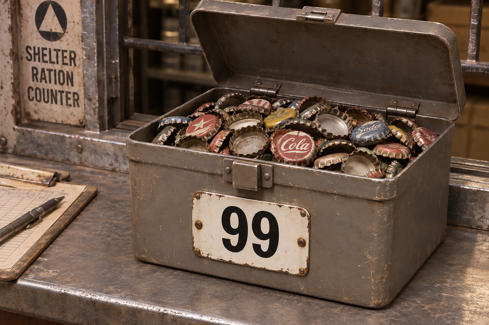 | |
250 钻石购买点Workspace.Model.223.Gem3(-12.1, 117.4, 42.1) | 所在建筑／区域室内银行柜台的钻石展示格 | 柜台蓝色钻石对应的近距交互。触发后弹出 250 钻石的 Roblox 商品购买确认。 | 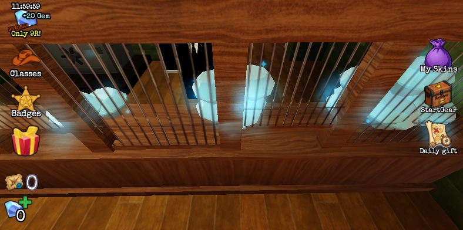 | 策划YY图 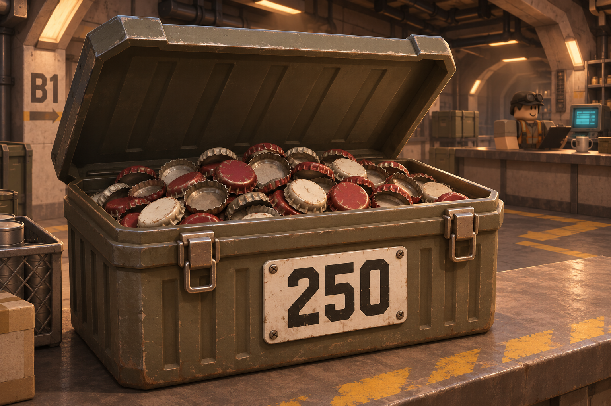 | |
700 钻石购买点Workspace.Model.223.Gem4(-16.5, 117.4, 42.1) | 所在建筑／区域室内银行柜台的钻石展示格 | 柜台蓝色钻石对应的近距交互。触发后弹出 700 钻石的 Roblox 商品购买确认。 | 策划YY图 | ||
Blesses YouMMM.CodesBoard · bless(73.9, 118.1, -30.7) | 所在建筑／区域露天摊位STORE 门架下的升级展示台 | 永久升级。购买后每局获得一次原地复活的权益。已拥有时再次交互提示售罄。 | 策划YY图 | ||
Laser PistolMMM.CodesBoard · pistol(73.9, 118.1, -39.7) | 所在建筑／区域露天摊位STORE 门架下的升级展示台 | 永久升级。之后进入对局时自带 Laser Pistol。已拥有时再次交互提示售罄。 | 策划YY图 | ||
More StorageMMM.CodesBoard · storge(73.9, 118.1, -48.8) | 所在建筑／区域露天摊位STORE 门架下的升级展示台 | 永久升级。提供额外 5 格储物容量。已拥有时再次交互提示售罄。 | 策划YY图 | ||
Super AxeMMM.CodesBoard · axe(73.7, 118.1, -21.8) | 所在建筑／区域露天摊位STORE 门架下的升级展示台 | 永久升级。之后进入对局时自带 Super Axe。已拥有时再次交互提示售罄。 | 策划YY图 | ||
待删除皮肤展示摊Workspace.Model.Union(47.4, 115.8, -70.3) | 所在建筑／区域棚内棚屋正面开口后的展示台 | 在武器展示架附近交互会打开皮肤商店，由商店处理后续选购。图中是同一展示架上相邻的展示件。 | 策划YY图已弃用 · 原皮肤方案 | ||
激励广告保险箱广告.AD.ADPart(24.1, 112.8, -16.7) | 所在建筑／区域广场公共区广场商店侧的独立广告点 | 靠近后可请求播放激励视频。脚本按账号资格、库存、冷却和当日领取次数限制播放，当日三档奖励配置为 1、2、3 钻石。 | 策划YY图 | ||
点赞里程碑宝箱宝石宝箱.箱子底.treasure.LikeTreasure(-23.6, 114.1, 25) | 所在建筑／区域室外近旁银行正门旁的台阶平台 | 宝箱提示写 Open，但交互实际进入商城。宝箱旁的进度根据配置的点赞数更新，显示已达到的里程碑、下一目标和对应兑换码。 | 策划YY图 |
任务与战绩
NPC 对话
NPC 照片配合对话源码整理。警长的传闻和 Boot 的亲历从各自的视角描述同一种羊形生物。
酒馆座椅
| 物件 | 所在建筑／区域 | 用途与触发 | Studio 视口实拍 | 策划备注 | 策划YY图 |
|---|---|---|---|---|---|
可坐座椅Workspace.椅子.Seat | 所在建筑／区域室内酒馆一层和二层桌椅区 | 两层各有 12 把同款座椅，共 24 把。接触座面可坐下，跳跃可离座。 |